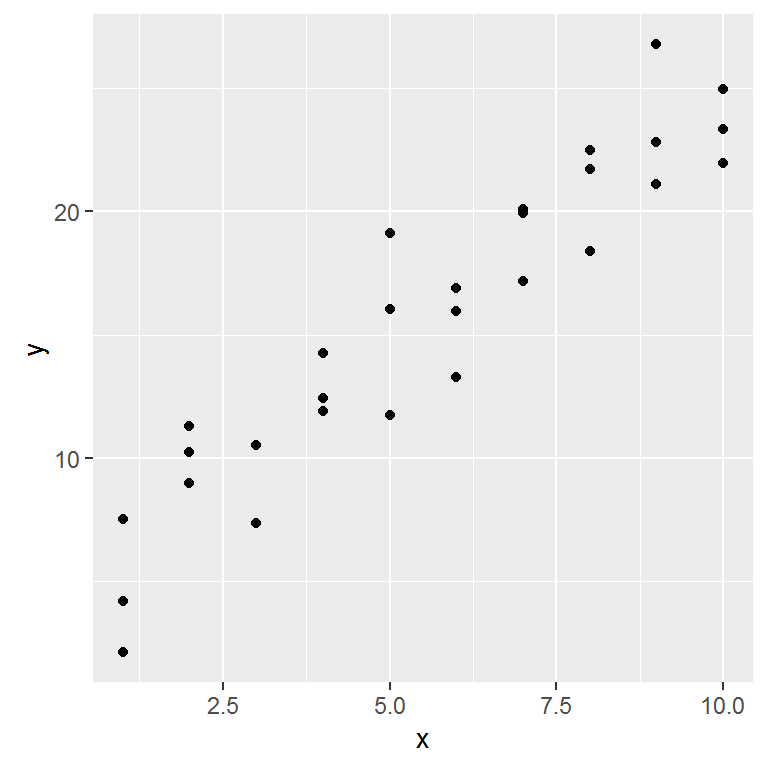
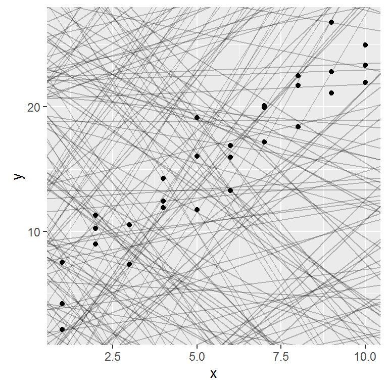
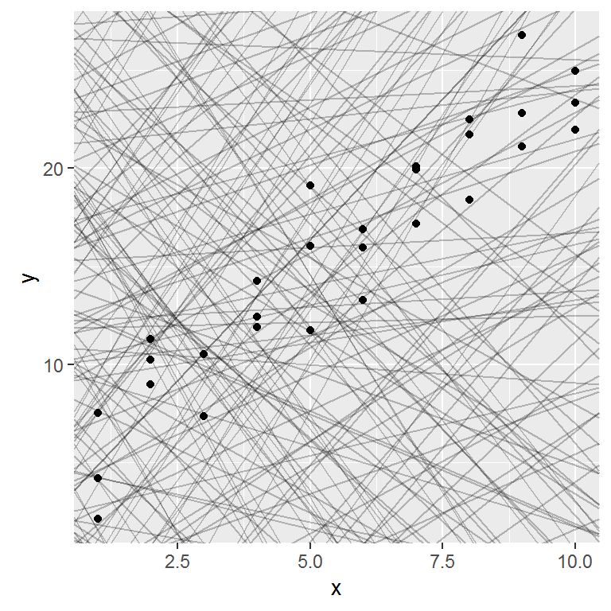
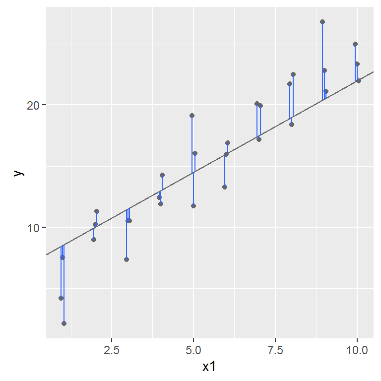
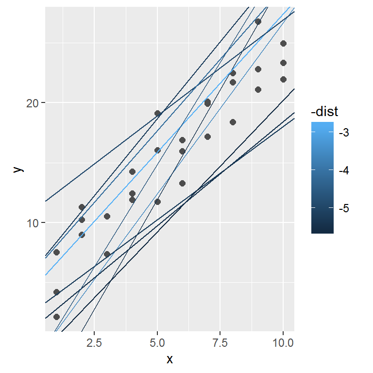
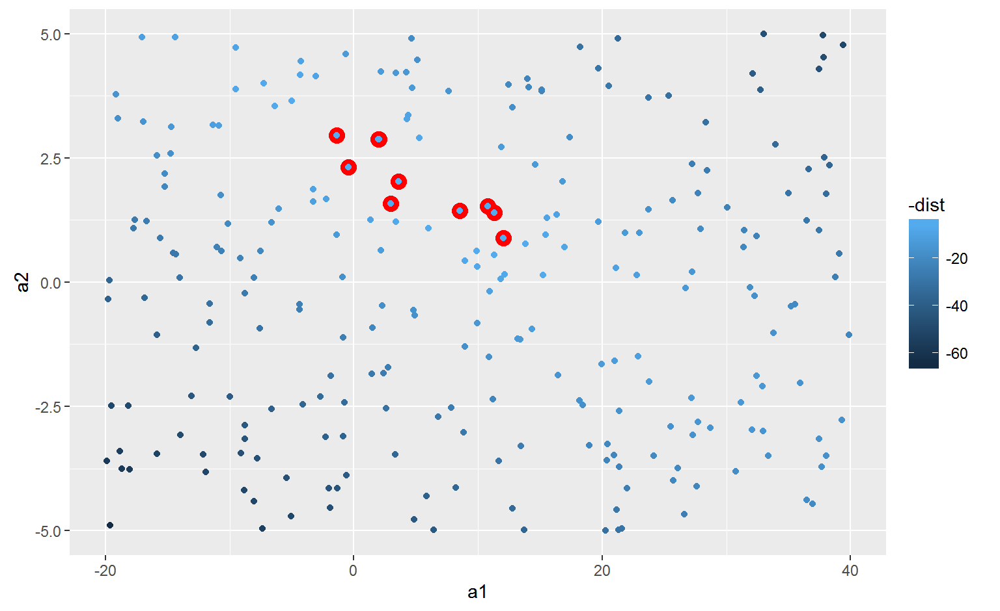
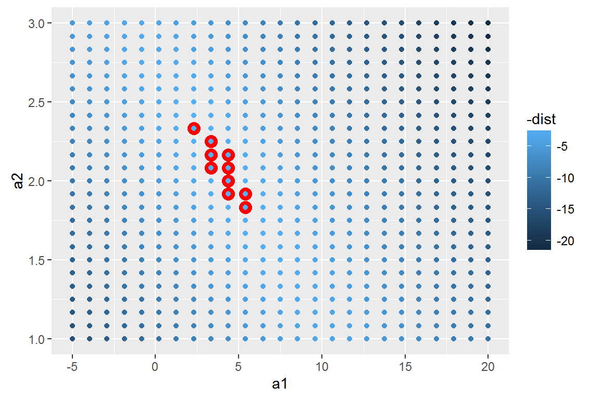
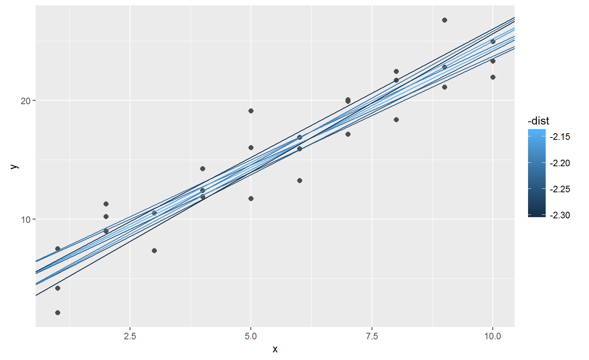
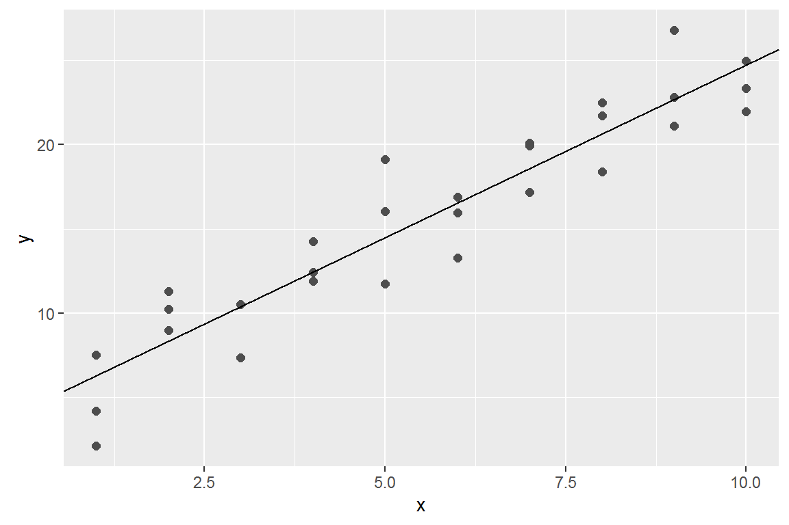

Models

Ranae Dietzel and Andee Kaplan
We will be going over Chapter 23 of R for Data Science by Garrett Grolemund and Hadley Wickham almost verbatim.
First, define a family of models that express a precise, but generic, pattern that you want to capture.
y = a_1 * x + a_2x and y are known variable from your data and a_1 and a_2 are parameters that can vary to capture different patternsNext, generate a fitted model by finding the model from the family that is the closest to your data.
y = 3 * x + 7.A fitted model is just the closest model from a family of models. This does not necessarily mean it is good and does not imply the model is “true”.
Today we’ll use the modelr package which wraps around base R’s modelling functions to make them work naturally in a pipe.
library(tidyverse)
library(modelr)
options(na.action = na.warn)Lets take a look at the simulated dataset sim1. It contains two continuous variables, x and y. Let’s plot them to see how they’re related:
ggplot(sim1, aes(x, y)) +
geom_point()
In this case, the relationship looks linear, i.e. y = a_0 + a_1 * x. Let’s start by getting a feel for what models from that family look like by randomly generating a few and overlaying them on the data. 

Most of these models are very bad. If we can quantify the distance between the data and each model, we can get a better idea of which models are better.
One place to start is to find the vertical distance between each point and the model, as in the following diagram.

This distance is the difference between the y value given by the model, and the actual y value in the data.
To compute this distance, we first turn our model family into an R function. This takes the model parameters and the data as inputs, and gives values predicted by the model as output:
model1 <- function(a, data) {
a[1] + data$x * a[2]
}
model1(c(7, 1.5), sim1)## [1] 8.5 8.5 8.5 10.0 10.0 10.0 11.5 11.5 11.5 13.0 13.0 13.0 14.5 14.5
## [15] 14.5 16.0 16.0 16.0 17.5 17.5 17.5 19.0 19.0 19.0 20.5 20.5 20.5 22.0
## [29] 22.0 22.0Next, we need some way to compute an overall distance between the predicted and actual values. In other words, the plot above shows 30 distances: how do we collapse that into a single number?
We will use the “root-mean-squared deviation”. We compute the difference between actual and predicted, square them, average them, and the take the square root.
measure_distance <- function(mod, data) {
diff <- data$y - model1(mod, data)
sqrt(mean(diff ^ 2))
}
measure_distance(c(7, 1.5), sim1)## [1] 2.665212purrrNow we can use purrr to compute the distance for all the models defined above. We need a helper function because our distance function expects the model as a numeric vector of length 2.
sim1_dist <- function(a1, a2) {
measure_distance(c(a1, a2), sim1)
}
models <- models %>%
mutate(dist = purrr::map2_dbl(a1, a2, sim1_dist))
models## # A tibble: 250 × 3
## a1 a2 dist
## <dbl> <dbl> <dbl>
## 1 13.12348001 -1.8517400 16.97381
## 2 -15.39548699 -2.7976278 48.38368
## 3 2.99767693 0.2507514 12.45401
## 4 -0.04579094 4.9493584 14.49241
## 5 30.35659918 -1.5248814 12.32296
## 6 -14.05320299 3.5153500 11.25688
## 7 -10.75608309 2.8032437 11.25836
## 8 24.93667886 4.7943662 36.71972
## 9 -8.13386949 -1.0773910 30.97281
## 10 21.29810972 -1.3550271 10.14983
## # ... with 240 more rowsNext, let’s overlay the 10 best models on to the data. The models are colored by -distto make sure that the best models (i.e. the ones with the smallest distance) get the brighest colours.

We can also think about these models as observations, and visualising with a scatterplot of a1 vs a2, again coloured by -dist.

Instead of trying lots of random models, we could be more systematic and generate an evenly spaced grid of points (this is called a grid search). Parameters of the grid were roughly picked by looking at where the best models were in the previous plot.
grid <- expand.grid(
a1 = seq(-5, 20, length = 25),
a2 = seq(1, 3, length = 25)
) %>%
mutate(dist = purrr::map2_dbl(a1, a2, sim1_dist))
When you overlay the best 10 models back on the original data, they all look pretty good:

optim()best <- optim(c(0, 0), measure_distance, data = sim1)
best$par## [1] 4.222248 2.051204

Alter your slides by highlighting some of the code.
Add an image and adjust the size and center the image using html..
Make notes for a few slides and try out presenter mode.